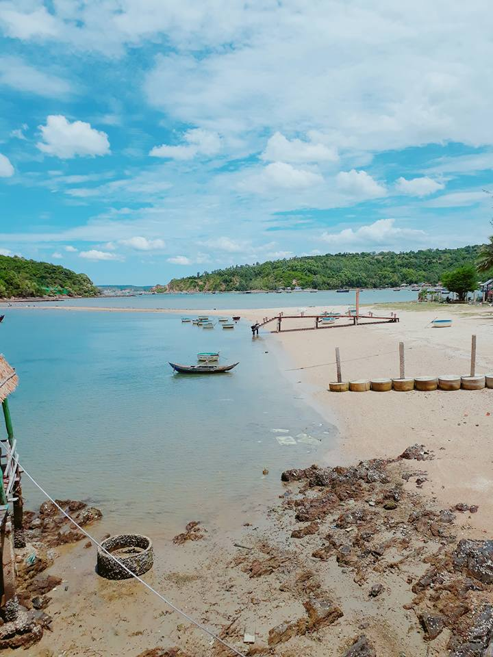
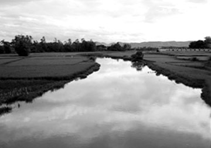

Du lịch Phú YênHấp dẫn và thân thiện! |
|
Động Cát Từ Nham - Núi Phú Sĩ Việt Nam Sông Cầu - Phú Yên |
 |
Nhất Tự Sơn - Con đường đi bộ ra đảo Vịnh Xuân Đài - Sông Cầu - Phú Yên |
Trong số những làng cổ được hình thành đầu tiên ở Phú Yên trong thời kỳ mở đất, làng Phụng Các có vị trí quan trọng. Nằm bên dòng sông Ba giữa đồng bằng Tuy Hòa, làng Phụng Các có vai trò thúc đẩy quá trình mở mang lãnh thổ về phía nam của người Việt, đồng thời có nhiệm vụ bảo vệ công cuộc khẩn hoang, hình thành làng xã ở phía bắc Phú Yên. Ngày nay, mỗi khi đến làng cổ Phụng Các để thắp hương tưởng niệm vị Thành hoàng Lương Văn Chánh - người khai sáng ra vùng đất có lịch sử 400 năm, chúng ta cảm giác như được trở về vùng đất tổ của Phú Yên với bao cảm xúc dâng tràn.
Phụng Các là một làng cổ nằm ở vùng đồng bằng tả ngạn sông Đà Diễn xưa. Thuở mới lập, vị trí giới cận làng Phụng Các được Nguyễn Đình Đầu mô tả qua Nghiên cứu địa bạ triều Nguyễn PHÚ YÊN: “Đông giáp xã Phước Toàn, tây giáp địa phận hai thôn Cẩm Sơn và Đại Phú, nam giáp thôn Đại Phú và xã Phú Ân, bắc giáp địa phận thôn Sơn Triều”(1)
Hiện nay vị trí tiếp giáp giữa làng cổ Phụng Các với khu vực xung quanh được xác định: phía bắc giáp xã Bình Kiến với các thôn Sơn Triều, Thọ Vức; phía đông giáp thôn Quy Hậu (xã Hòa Trị, huyện Phú Hòa); phía nam giáp thôn Đông Lộc (xã Hòa Thắng, huyện Phú Hòa) và thôn Đại Phú (xã Hòa Quang Nam, huyện Phú Hòa); phía tây giáp núi Hòn O thuộc thôn Cẩm Sơn (xã Hòa Quang Bắc, huyện Phú Hòa).
Là một làng có diện tích trải rộng khu vực đồng bằng nên đất đai ở Phụng Các màu mỡ thích hợp cho việc trồng lúa và các loại hoa màu. Diện tích sở hữu của làng vào thời điểm lập địa bạ triều Gia Long 15 (1816) là 516 mẫu 5 sào, trong đó quan điền và tư điền thực trưng 308 mẫu, đất hoang nhàn và mộ địa 5 mẫu, lưu hoang 198 mẫu. Phần lớn diện tích là ruộng tốt thượng đẳng điền, mỗi năm gieo trồng vào tháng 4-5 (hạ điền) gặt vào tháng 11-12(2). Xen giữa đồng bằng và xóm làng dân cư đông đúc là các ngọn núi đất thấp như núi Sầm, núi Ễnh, núi Vàng điểm tô cảnh sắc nơi đây như một bức tranh thủy mặc.
Núi Ễnh (còn gọi là hòn Kỳ Lân) có dáng hình một con kỳ lân đang trong tư thế chống các loài ác thú bảo vệ dân làng. Núi Vàng được người dân nơi đây đặt tên vì cả ngọn núi vào mỗi lần sau cơn mưa là nhiều loài hoa dại thi nhau nở, đứng xa trông như một rừng hoa vàng rực. Đặc biệt núi Sầm mang hình con chim phụng (phượng hoàng) đang sải cánh bay về phương nam và được mọi người biết đến là một thắng cảnh thiên nhiên khi đi vào ca dao:
Lẻ loi như cụm núi Sầm
Thản nhiên như mặt nước đầm Ô Loan.
Gần khu vực dân cư sinh sống là các gò cao nằm rải rác khắp làng như gò vàng, gò ổi, gò đỗ, gò cây da, gò ông Sâm, gò kho…là những vùng đất thổ thích hợp trồng các loại hoa màu như đỗ, sắn, ngô, khoai lang…
TIN NỔI BẬT
Sông Bến Lội phát nguyên từ các phụ lưu suối Ré và nhiều suối nhỏ khác từ miền rừng núi xã Hòa Quang chảy qua ôm choàng bao bọc phía tây và bắc làng Phụng Các như một con rồng nhỏ (tiểu long) cung cấp nước tưới khi vào mùa hạn và là kênh rút nước khi mưa bão. Thời kỳ trước 1945 đường sá còn chật hẹp, sông Bến Lội là đường giao thông vận chuyển nông sản chở xuống chợ Dinh phủ Tuy Hòa tiêu thụ và ngược lại mua một số vật dụng thiết yếu cho nhu cầu tiêu dùng của người dân trong làng. Ngày nay phần nhiều đoạn sông bị phù sa bồi lấp và một số đoạn do ruộng canh tác nông nghiệp lấn bớt dòng chảy, nên việc thoát úng gặp nhiều khó khăn mỗi khi mưa lớn, các cánh đồng của làng như Rộc Chùa, Bầu Cỏ, Bàu ao, đồng Mạ… bị ngập chìm trong nước có khi cả tuần lễ, ảnh hưởng đến vụ mùa cũng như đời sống nhân dân.
Phía đông làng Phụng Các là cồn cao các xóm Cát, xóm Xương Rồng của làng Quy Hậu mang hình dáng như một con rùa nhỏ (tiểu quy) đang bò về phía nam sánh với con rùa lớn ở phía bắc là núi Cổ Rùa. Vì vậy, khi lưu dân người Việt vào đây khai phá lập làng trên một vùng đất có địa cuộc phong thủy tứ linh (long, lân, quy, phụng) quý hiếm, nên họ đã định cư lập nghiệp lâu dài. Việc đặt tên làng Phụng Các, tiền nhân muốn gởi gắm khát vọng vào vùng đất quý báu, giàu có, yên bình. Chính vì vùng đất chứa đựng yếu tố “địa lý” đặc biệt nên vị Thành hoàng Lương Văn Chánh- người có công đầu khai phá đất Phú Yên - đã chọn làm nơi an dưỡng tuổi già và là nơi an giấc ngàn thu sau khi làm xong nhiệm vụ mở cõi trong cuộc Nam tiến của dân tộc thế kỷ XVI-XVII.
(Còn Nữa)